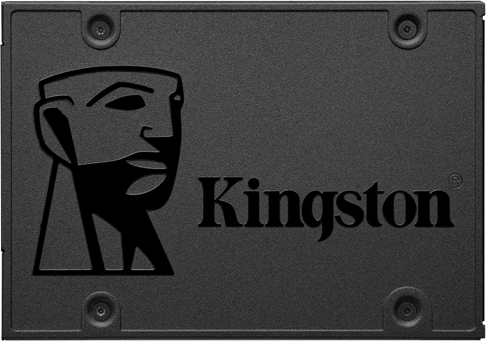

Fiote Hardware
Fiote Hardware
O armazenamento de dados de computador é uma tecnologia que consiste em componentes de computador e mídia de gravação que são usados para reter dados digitais. É uma função central e componente fundamental dos computadores. A unidade de processamento central (CPU) de um computador é o que, executando cálculos, manipula os dados. Na prática, quase todos os computadores usam uma hierarquia de armazenamento que coloca as opções de armazenamento rápidas, mas caras e pequenas, perto da unidade de processamento central (CPU) e as opções mais lentas, mas menos caras e maiores, mais distantes. Geralmente, as tecnologias voláteis rápidas (que perdem dados quando desligadas) são chamadas de "memória", enquanto as tecnologias persistentes mais lentas são chamadas de "armazenamento".
HD SSD Kingston SA400S37
480GB

HD Seagate 1TB Barracuda, 7200 RPM
HD Seagate IronWolf Pro, 16TB, 7200 RPM


Fiote Hardware
Fiote